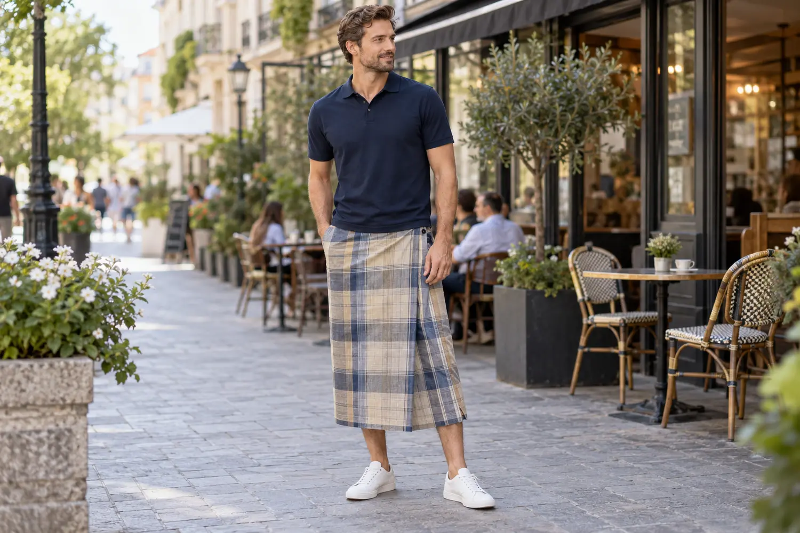
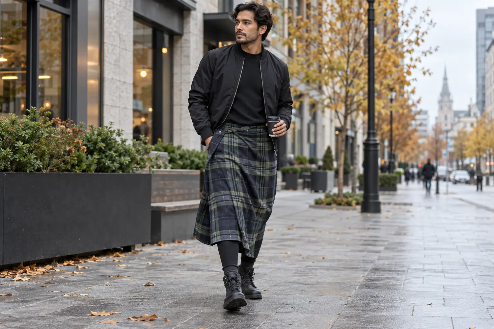
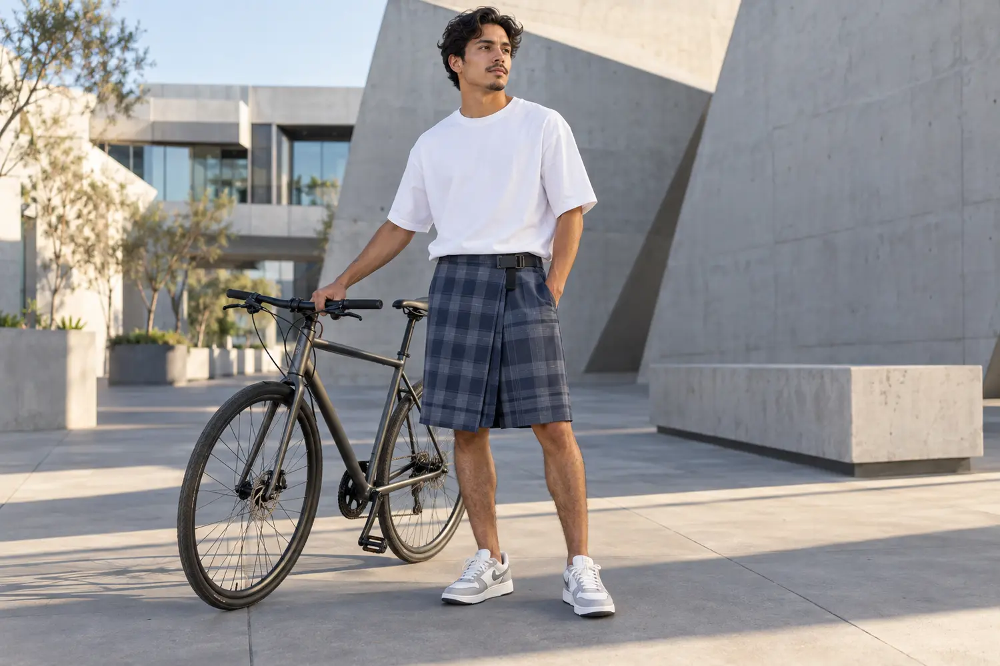
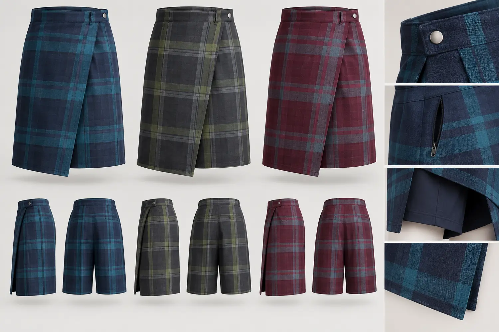
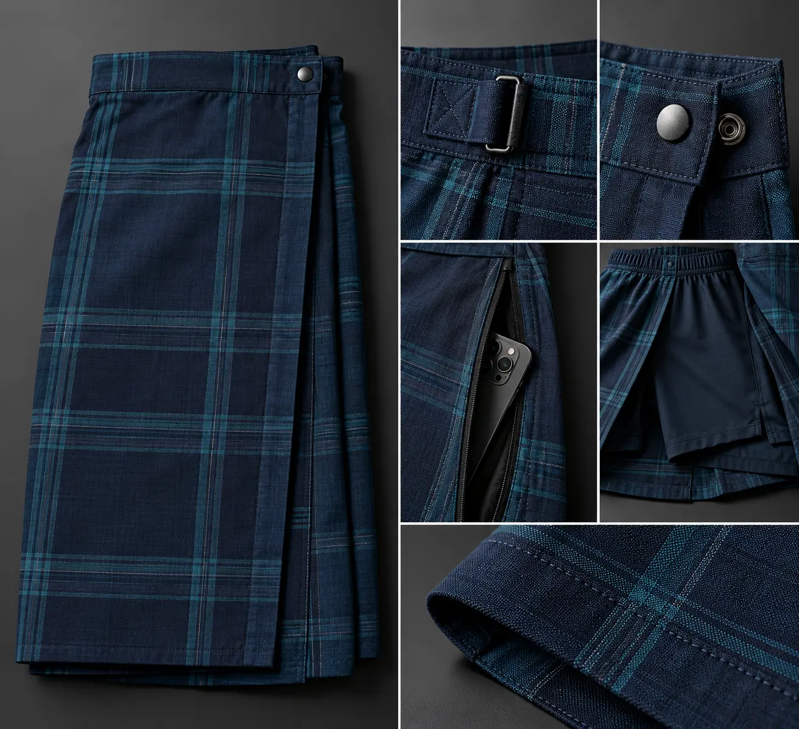
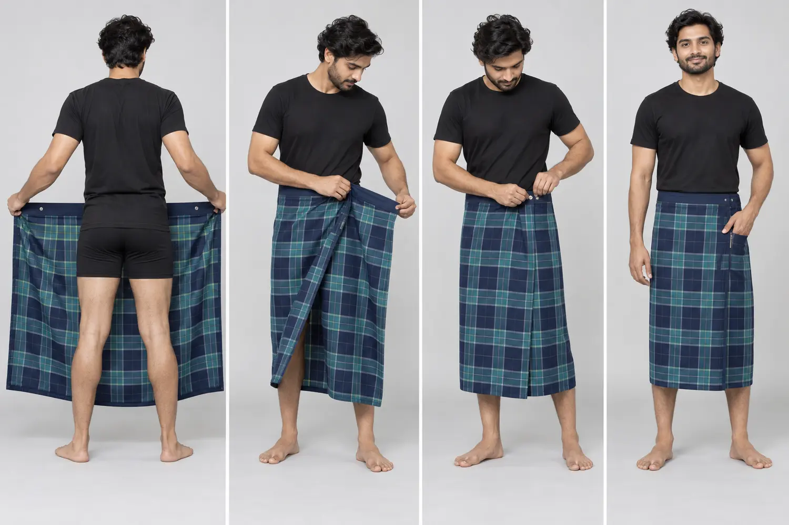

Airport Travel
Hands-free comfort with a secure pocket and easy closure.
A new utility-led direction for customers in the USA, Canada, UK, Europe and beyond—combining woven identity with secure closures, useful pockets and styling for travel, leisure and city life.

These ideas explore how the lungi could fit more wardrobes without losing its woven character.
Every image below was newly generated for this project as a design concept—not copied from a competitor catalogue.
Hands-free comfort with a secure pocket and easy closure.

Simple polo, sneakers and a quiet neutral check.

Styled with leggings, boots and a warm jacket.
A relaxed shape designed for broad, inclusive styling.
Breathable warm-weather dressing beyond the beach short.
A polished check paired with contemporary basics.
One garment idea, interpreted across people and personal styles.
Soft, respectful and easy for relaxed daily wear.
Shorter conversion and inner coverage for movement.
Deep colour, clean drape and a refined finish.

Bold checks with a hoodie, trainers and bicycle.

One concept shown in full length and active short styling.

Checks and solids for different markets and seasons.

Buckle, snap, zip pocket, inner short and reinforced hem.

Explore adaptable Modern Lungi concepts with Classic, City, Active, Travel and Cold Climate modes—plus three focused prototype directions.
பாரம்பரிய சுகத்தை பாதுகாத்து, இன்றைய வாழ்க்கைக்கு ஏற்ற ஐந்து நவீன லுங்கி பயன்பாடுகள்.
These 8-second clips are ready to generate after Runway is connected. Exact prompts are included with the website files.
Walk, turn, then close-up on the adjustable waist and secure pocket.
Centre, adjust, wrap and snap—shown in a clean studio sequence.
Fast travel, winter, resort and streetwear transitions.
Send the concept name, target country, preferred colour and estimated quantity. Our team can discuss samples, current capability and commercial terms.